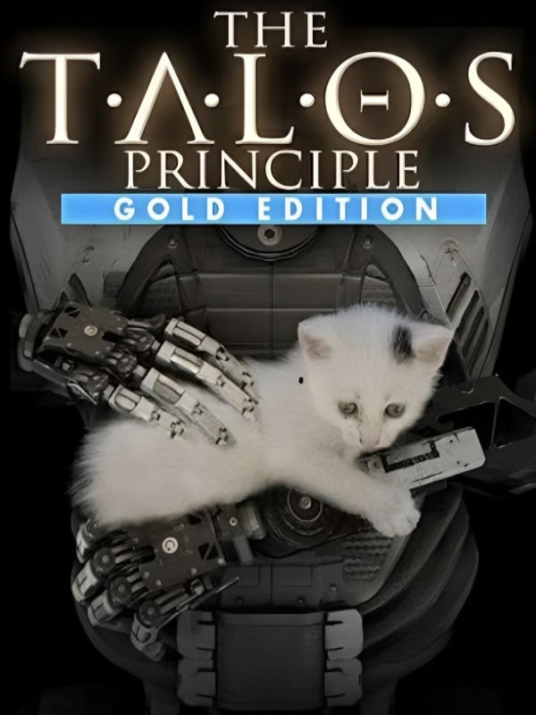

The Talos Principle: Gold Edition
Details
|  | |
| Playtime | Not Played |
| Last Activity | Never |
| Added | 14/02/2025 18:09:14 |
| Modified | 17/05/2025 23:30:27 |
| Completion Status | Not Played |
| Library | Gog |
| Source | GOG |
| Platform | PC (Windows) |
| Release Date | 23/07/2015 |
| Community Score | |
| Critic Score | |
| User Score | |
| Genre | Adventure Indie Puzzle |
| Developer | Croteam |
| Publisher | Devolver Digital |
| Feature | Single Player |
| Links | GOG |
| Tag | Action Adventure Indie Logic Puzzle Puzzle Platformer |
Description

As if awakening from a deep sleep, you find yourself in a strange, contradictory world of ancient ruins and advanced technology. Tasked by your creator with solving a series of increasingly complex puzzles, you must decide whether to have faith or to ask the difficult questions: Who are you? What is your purpose? And what are you going to do about it?
Features:
- Overcome more than 120 immersive puzzles in a stunning world.
- Divert drones, manipulate laser beams and even replicate time to prove your worth - or to find a way out.
- Explore a story about humanity, technology and civilization. Uncover clues, devise theories, and make up your own mind.
- Choose your own path through the game's non-linear world, solving puzzles your way.
- But remember: choices have consequences and somebody's always watching you.
Prototype DLC includes:
- Prototype Levels - Includes more than 100 puzzles from early prototype development stage and 1 exclusive level from early beta version, not present in the final game.
- Elohim Voice - US version - Elohim voice narrated by Serious Sam narrator Bill Jurney.
- Elohim Voice - Writer's prototype - Elohim voice narrated by The Talos Principle's writer Jonas Kyratzes.

The Talos Principle: Road to Gehenna follows the narrative of Uriel, Elohim's messenger, as he explores a strange, hidden part of the simulation on a mission of mercy and redemption in an attempt to free the souls of the damned at all costs.
This substantial expansion consists of four episodes that take experienced players through some of the most advanced and challenging puzzles yet. The Talos Principle writers Tom Jubert and Jonas Kyratzes have returned to pen the expansion and show players an entirely different side of Elohim's world through a journey to Gehenna filled with new characters and a new society with its own history and philosophy.

The new Serious DLC replaces the godlike voice of Elohim with completely NEW, rewritten and humorous Serious Sam script.
Serious Sam voice has been recorded by longtime Serious Sam voice actor John J. Dick.
It also includes a new Serious Sam player model for use in The Talos Principle.

The Talos Principle - Bonus Content includes:

• Documentary Video* - Making-Of The Talos Principle video featuring behind-the-scenes footage and exclusive developer interviews with Croteam members. This documentary takes a look at how the game was made.

• Digital Terminal Booklet** - The digital terminal booklet contains over 100 pages of text found in game terminals.

• Box Art** - Includes DVD label and DVD sleeve (front and back), so you can create your own retail The Talos Principle DVD box.

• Wallpapers - Eight exclusive hi-res (1920x1080) images as wallpapers.

• Posters, Stickers and Postcards - Three posters used at E3 2014 show, one sticker art for printing Talos related stickers on sticker paper and two postcards (two front and one back) used at Gamescom 2014 show.
• Banners - Two roll-up banners used at Pax Prime 2014 show.
* This item is only available in Croatian audio with English sub-titles
** English version only
 The Talos Principle - Soundtrack is the official soundtrack which includes a collection of 25 amazing tracks from the game, plus 2 bonus tracks, composed and now also specially remixed by Serious Sam's composer Damjan Mravunac.
The Talos Principle - Soundtrack is the official soundtrack which includes a collection of 25 amazing tracks from the game, plus 2 bonus tracks, composed and now also specially remixed by Serious Sam's composer Damjan Mravunac. TRACK LIST:
01. Welcome To Heaven (2:21)
02. When In Rome (2:27)
03. Trials (3:48)
04. The Sigils Of Our Name (2:32)
05. Temple Of My Father (2:48)
06. Made Of Words (4:45)
07. Sanctuary (1:54)
08. A Land Of Great Beauty (3:18)
09. A Land Of Ruins (2:42)
10. Before Was Only Chaos (2:16)
11. All Else Is Decay (2:53)
12. The Worlds Of My Garden Are Many (2:49)
13. The Temple Of The Sands (2:00)
14. The Guardians (2:20)
15. The Dance Of Eternity (1:24)
16. Your Wisdom Grows (2:09)
17. Blessed And Beloved (1:49)
18. A Land Of Tombs (2:16)
19. To Seek Salvation (2:21)
20. Do With It As You Will (2:09)
21. Virgo Serena (1:31)
22. The Forbidden Tower (3:44)
23. Out There (2:49)
24. Heavenly Clouds (2:40)
25. False God (3:57)
BONUS TRACKS:
26. Extra Bonus - Blessed Messenger (0:58)
27. Extra Bonus - The End Of The Process (Finale) (3:29)